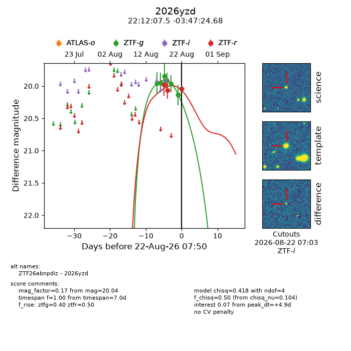
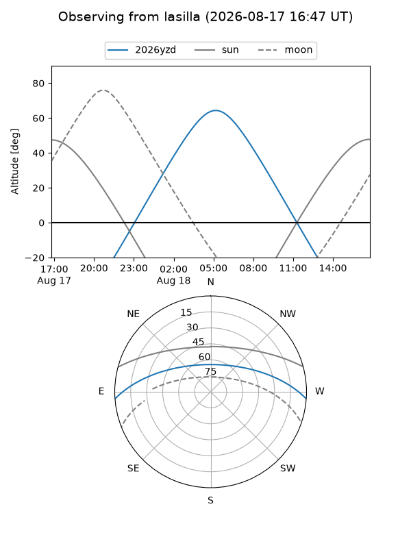
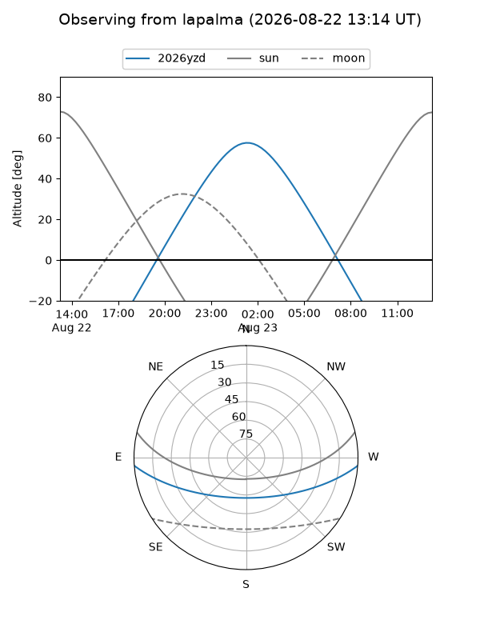
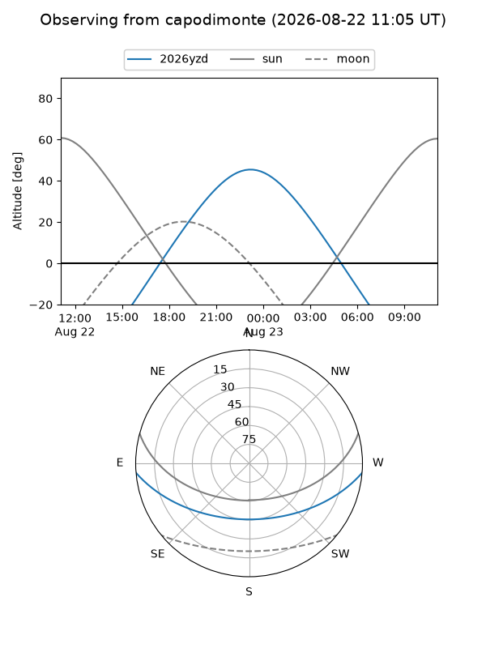
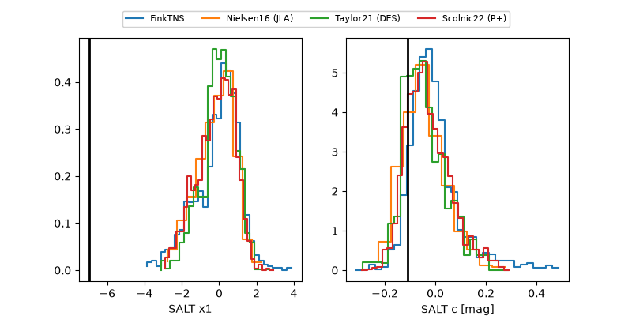

2026yzd
Target 2026yzd at 2026-08-22 07:53
Aliases and brokers:
FINK-ZTF: ztf.fink-portal.org/ZTF26abnpdiz
Lasair-ZTF: lasair-ztf.lsst.ac.uk/objects/ZTF26abnpdiz
ALeRCE-ZTF: alerce.online/object/ZTF26abnpdiz
YSE-PZ: ziggy.ucolick.org/yse/transient_detail/2026yzd
TNS name: wis-tns.org/object/2026yzd
Direct TNS query: direct search
alt names
ZTF26abnpdiz (ztf,fink_ztf)
2026yzd (tns,yse)
Coordinates:
equatorial (ra, dec) = 333.0312,-3.79019
equatorial (HMS+DMS) = 22:12:07.49,-03:47:24.68
galactic (l, b) = (57.3825,-45.40839)
Flags:
TNS type: nan
peak dt: +4.9
Photometry:
last ztfg=20.14, ztfr=20.04
6 ztfg, 3 ztfr detections
Lightcurve

Visibility



Additional plots
